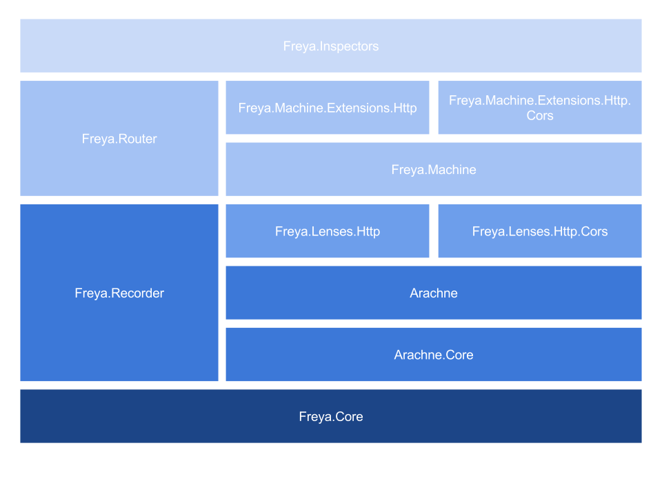

Relax and let the HTTP Machine do the Work
Andrew Cherry and Ryan Riley

@panesofglass
https://github.com/panesofglass
OWIN

Contents
- Problems
- Solution
- Freya
- Examples
- Questions
HTTP is Hard

What's wrong with existing solutions?
Weak support for most of HTTP
Little to no enforcement of the HTTP RFCs
Manual protocol manipulation
Team disagreements ...
... and bloodshed
Prior Attempts (in F#)
A Better Solution
Machine-style Frameworks
Modeled as a graph

Declarative config via overrides
Resource = defaults + overrides
After all, if you're working against an enigma, you don't stand a chance without a machine.
Webmachine
Liberator
Freya
A functional web stack in F#

Architectural Principles
Stack rather than monolithic framework

Building blocks for higher-level abstractions
Compat with external libraries
"Ethical" Principles
Work with existing abstractions
(where possible)
Enforce the pit of success
Leverage F# eliminate the wrong thing
Static File Server
Todo Backend
Next for Freya
- Hypermedia
- Inspectors
- Documentation - http://docs.freya.io/
Questions?
Freya Stack
A Tour
Freya.Core
- Basic abstractions over OWIN
freyacomputation expression (the wrapping abstraction for our mutable state -- we will never speak of this in polite conversation)- Set of operators to use
freyacomputation expressions in a more concise way - Some basic functions and lenses to give access to the state in a controllable way
1: 2: |
|
Roughly equivalent to Erlang's webmachine signature:
1: 2: |
|
1: 2: 3: 4: 5: 6: 7: 8: 9: 10: 11: 12: 13: 14: 15: 16: 17: 18: |
|
Lenses?
1: 2: 3: 4: 5: 6: 7: 8: 9: 10: 11: 12: 13: 14: |
|
OWIN Integration
1: 2: 3: 4: 5: 6: 7: 8: 9: 10: 11: |
|
Use OWIN in Freya
1: 2: 3: 4: 5: 6: 7: 8: 9: 10: 11: 12: 13: 14: 15: 16: |
|
Convert Freya to OWIN
1: 2: 3: 4: 5: 6: 7: 8: 9: 10: 11: 12: 13: 14: 15: 16: |
|
Freya.Pipeline
- Very small and simple -- all about composing
freyacomputations in a way that represents a continue/halt processing pipeline - A pipeline is simply a
freyacomputation that returnsNextorHalt(FreyaPipelineChoicecases) - Single, simple operator:
>?=
1: 2: 3: 4: 5: 6: 7: 8: 9: 10: 11: 12: 13: 14: 15: 16: 17: 18: 19: |
|
Freya.Recorder
- Build introspection into the framework at a low level
- Provide some infrastructure for recording metadata about processing that more specific implemenations can use
- For example,
Freya.Machinerecords the execution process so it can be examined later
Freya.Types.*
- Set of libraries providing F# types which map (very closely) to various specifications, such as HTTP, URI, LanguageTag, etc.
- These are used throughout the higher level stack projects
- Always favor strongly-typed representations of data over strings
- Provides parsers, formatters (statically on the types) and lenses from state to that type (either total or partial)
Really?
- Why not use
System.Net.Whatever? - Well ...

Freya.Types.*
- Types and parsers for when you don't already know everything about the string you've been given
- Types which map closely to HTTP specifications
- Types which can distinguish between different kinds of URIs being valid in different places
- Types which can actually express languages that aren't "en-US"
- ("hy-Latn-IT-arevela"? Of course we support Aremenian with a Latin script as spoken in Northern Italy why do you ask?)
Integration with existing standards
OWIN
1:
|
|
- Standard contract between servers and apps/frameworks
- Several server implementations, including IIS
- Reasonably well followed standard
Freya.Router
- A simple, trie-based router, does pretty much what you'd expect
- Doesn't try and do anything but route requests to pipelines
- (and is itself a pipeline -- everything's composable / nestable!)
Freya.Machine
- A "machine" style resource definition / processing library
- Inspired by projects like webmachine (Erlang) and Liberator (Clojure)
- Adds types
Freya.Inspector
- Built-in introspection
- Has an extensibility model (WIP)
- Right now provides an API; UI in-progress
Freya.*.Inspector
- Component-specific extensions to the inspector, currently providing component-specific JSON for the inspection API
- Will provide UI extensions, too, but haven't decided on the best approach to that (suggestions welcome, of course)